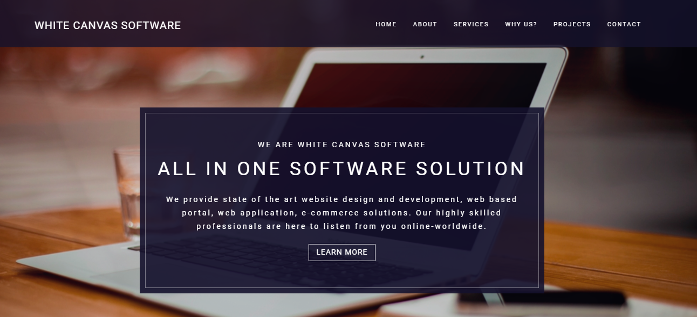
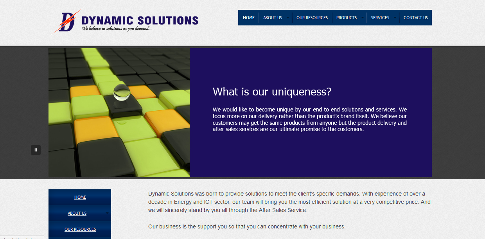
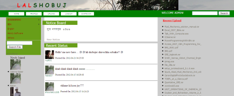
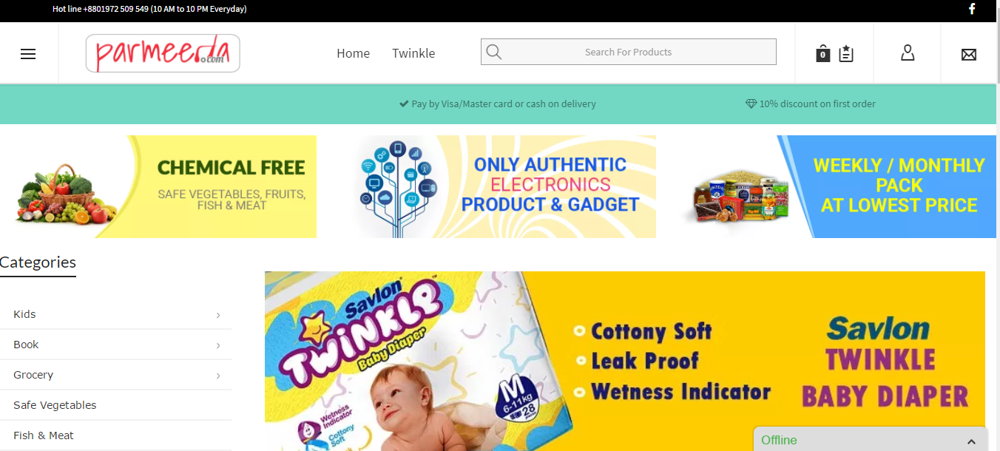
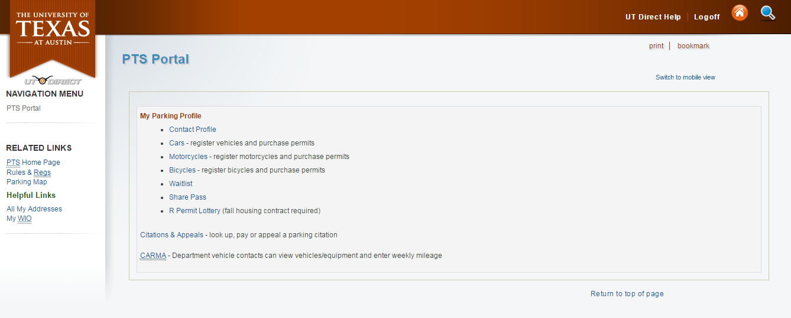
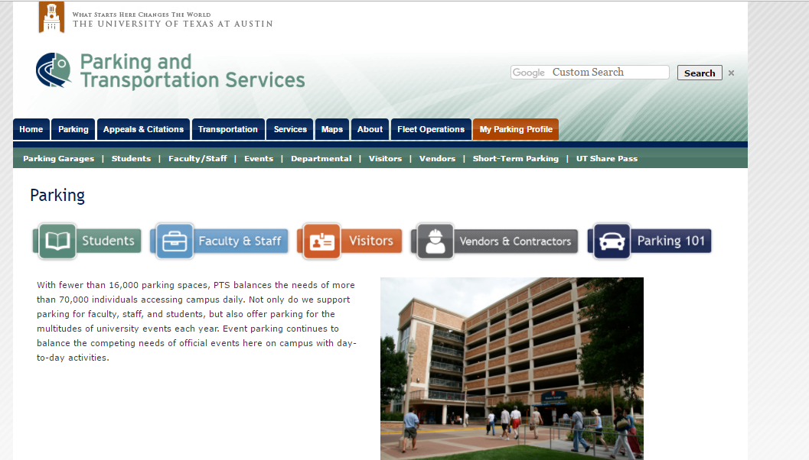
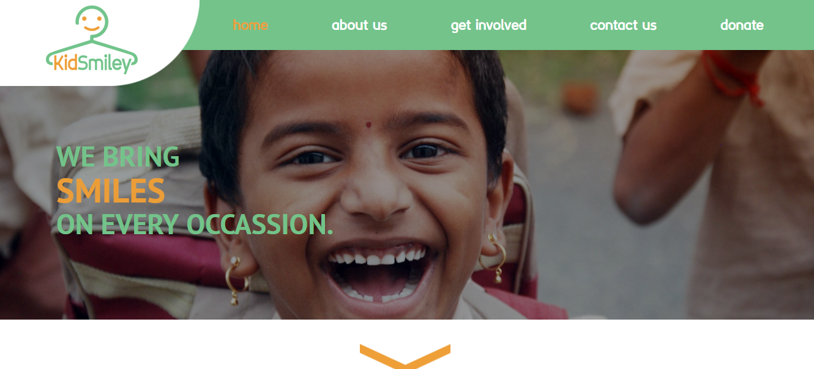
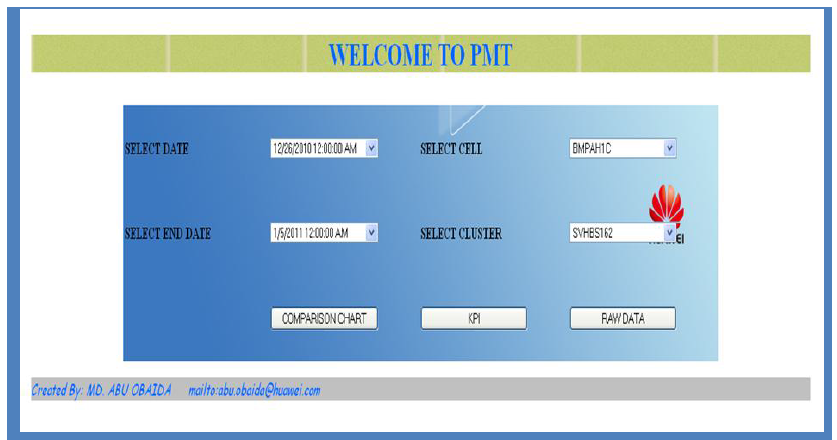

Web Development
Educational Web Application: Higher Study Prep
Higher Study Prep
is an online platform to provide end to end solution to higher
study aspirant students. I founded the organization in 2016 and lead the software development
team and supported the team on any available free time including weekends, holidays and after
works.
Lead the team of four developers in designing, developing, testing and deploying
https://higherstudyprep.com/
Configured Linux/Ubuntu server and Apache, Nginx, Supervisor, RabbitMQ and Celery to run
Python/Django application on top of Linux server
Guided the team in designing and optimizing Postgres database
Developed the most advanced online practice and mock test module for Graduate Record Examination
(GRE).
Technology used: Python, Django, Nginx, uWSGI, Ubuntu, AWS, SSL, Crontab, JavaScript, JQuery, React, Ajax, Redis, Postgres, Celery, Django Rest Framework, Bootstrap, Shell Script
Web Application: Automating Finite Element Analysis
I developed the application as a contract work for IDARE.
The application takes data in csv format, do the finite element analysis and
deliver the result as downloadable file as well as generate charts and plots.
In the background it processes the input data, runs Abaqus((Finite element analysis software),
postprocesses the data generated by Abaqus and finally generates the reports and visualization.
The compliment I received from Mr. Khairul Chowdhury, CTO of IDARE.
Abu Obaida and his team has been phenomenal delivering my products. He is one of the best in developing software products. It took almost no iteration to perform his tasks. He developed intermediate level subject matter expertise on my discipline very quickly and finished the work as per quality. He and his team is really extraordinary in developing complex engineering and web application.Technology used: Python, Django, C, VB, Abaqus, Pandas, Bokeh, Nginx, uWSGI, Postgres.
Bioinformatics Web Application: RNASeqMetaDB
RNASeqMetaDB is a database and web server for navigating metadata of publicly available mouse RNA-Seq datasets. You can quickly search for the gene datasets you want by using the features provided by this service. The user interfaces are very friendly. The backend APIs are realized using Python and Flask with well designing of MySQL schema.

Company Website: White Canvas Software
White Canvas Software is a software startup based in Dhaka, Bangladesh. I founded White Canvas Software in 2012. WCS provides state of the art custom software development, web design and development and custom web application.
Company Website: Dynamic Solutions
A company website built on top of WordPress. I used to code in WordPress and PHP a lot back in 2010-2013
Social network, Education based site. Lal Shobuj
"Lal Shobuj" was one of my dream projects back in 2008-2009. I replaced Lal Shobuj with more advanced www.mystudynotebook.com/ which are built on same philosophy.
Review and Rating Site: Review Bangla
Review Bangla is the number one review and rating site in Bangladesh supporting both Bangla and English language. I developed the entire site from scratch starting from UI/Database design to most sophisticated search engine implementation. Technology used-
- Python/Django
- ElasticSearch
- Redis
- Postgres
Web application: AI Based Corrosion Failure Assessment
Developed the web interface to run an AI application to predict corrosion and asset failure for
IDARE. It is capable of taking large user data as CSV,
run the prediction model written in R and generate charts and reports.
Technology used: Python, Django, R, pandas, numpy, xhtml2pdf

Report Generating Web application: Analytical Template
Another web application developed for IDARE.
In developing the application, converted hundreds of excel formulas to Python. The application was
capable of generating properly formatted pdf report after processing and analyzing user data.
Technology used: Python, Django, R, Pandas, Numpy, Bokeh, xhtml2pdf
E-Commerce parmeeda.com
parmeeda.com is one of the persistent clients of my software startup White Canvas Software I lead the team of web developers to develop this e-commerce site for parmeeda.com in 2016. Ever since we are maintaining the site for parmeeda.com. parmeeda.com is built on top of WordPress and Woocommerce.
Web application Parking Profile, University of Texas, Austin
My Parking Profile is the application for any parking related services including buying a permit, adding vehicles, pay citations etc for The University of Texas at Austin. As a software developer in the university, I was part of the team responsible for developing and improving the application. My contribution to this application- 1. Due to upgrading converted all Django model calls to SOAP API calls. 2. Developed new features including ParkingPerks, Access Credentials and so on 3. Wrote unit tests and functional tests for the application
Web application Parking and Transportation, University of Texas, Austin
This web application is the web presence of the Parking and Transportation Department of the University of Texas at Austin. As a software developer in the university, I developed and improved several features of this website which involves connection to Oracle and MySQL database including admin interface, admin functionality and google map APIs.
Website, Non profit organisation Kidsmiley
Lead the team in developing the site under a project of White Canvas Software Built on top of Python/Django
Performance Management Tool for Telecom industry
One of the application I built while working in Telecom industry in 2012 and feel proud of. This tool was developed to automatically prepare performance report for radio network Planning department of GrameenPhone. Got certification of appreciation from my then company Huawei for this project. 
And many more...
I developed numerous other applications, some of them are not live any more, some are gone into oblivion. Whatever the fate of the application is, I always enjoy coding and learning new technologies. Thanks for visiting my portfolio.